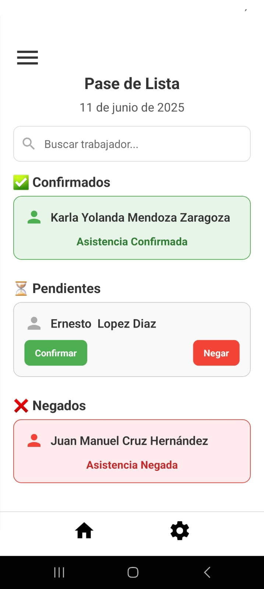

¡Descarga la última versión de **ControlAgro** directamente en tu dispositivo Android y optimiza la gestión de tu cultivo!
Versión actual: 1.0.0
Descargar APKCompatible con Android 5.0 (Lollipop) o superior.
Vistazo a ControlAgro

Explora cómo ControlAgro te ayuda en la gestión de tu producción agrícola.
Instalación Sencilla
Para instalar **ControlAgro**, descarga el APK y ábrelo. Si tu dispositivo lo requiere, habilita la instalación de "Fuentes desconocidas" en la configuración de seguridad.
¡Listo para empezar a usar ControlAgro en minutos!